Student Management System (C++)
Console-based CRUD system for managing student records using file handling and OOP.
I can
Science and Engineering Student
Computer Science and Engineering student at American International University Bangladesh with a strong interest in programming, technology, and problem solving. I am working toward becoming a software engineer and building useful software solutions.
My name is Ulfat Sumaitah and I am a third year Computer Science and Engineering student at American International University Bangladesh. I am passionate about information technology and enjoy learning about programming, software development, and new technologies. During my studies I have been building my technical skills through academic work and projects that help me understand real world problem solving. My goal is to become a software engineer and contribute to building practical and efficient software. This portfolio presents some of my academic work, projects, and learning experiences as I continue developing my skills in the field of computer science.
Console-based CRUD system for managing student records using file handling and OOP.
Classic snake game with smooth keyboard controls and a scoring system.
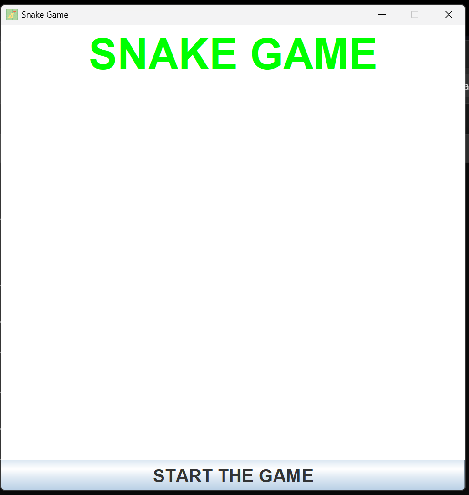
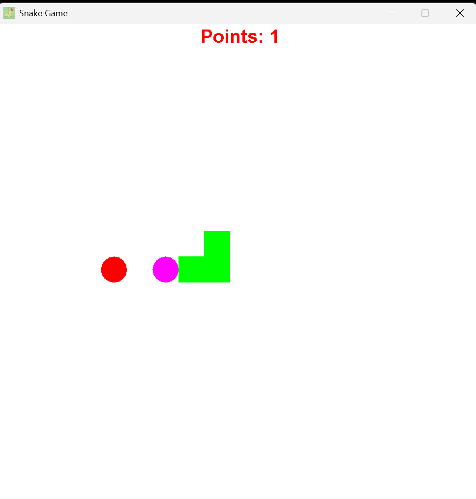
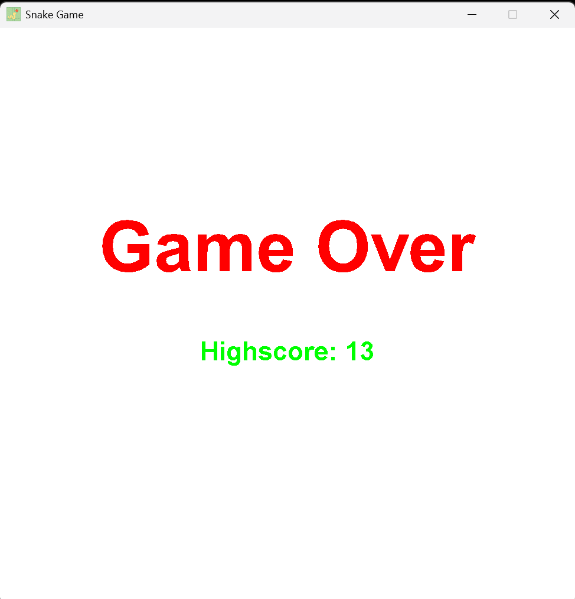
This very website — clean, minimal, and responsive design built using HTML, CSS, and JavaScript.
Have been tutoring students from different grades for the past two years, helping them improve their understanding of various subjects. Also provide paid home tutoring, including teaching my younger sister and helping her with academic subjects and homework. Frequently assist classmates with programming concepts and problem-solving techniques. Developed strong ability to explain complex topics in a simple and clear way. Served as a class leader multiple times, assisting instructors and supporting classmates. Coordinated group activities and maintained effective communication within the class.
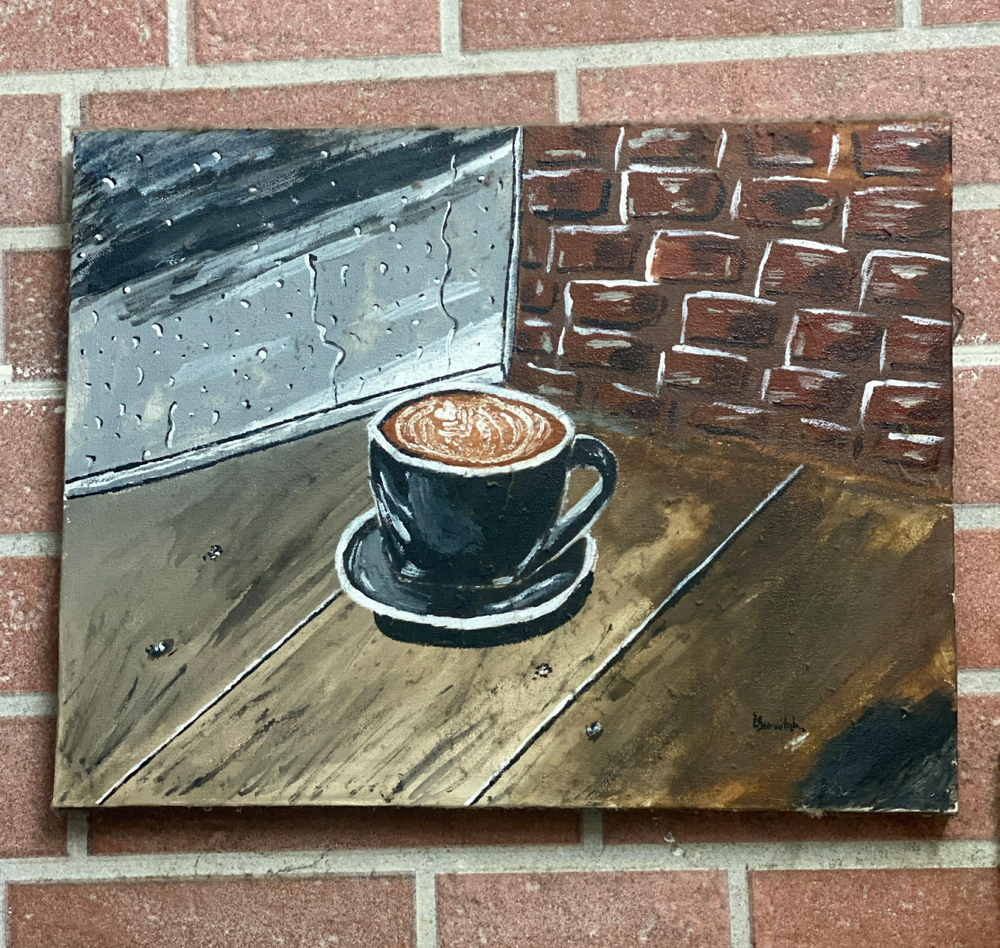
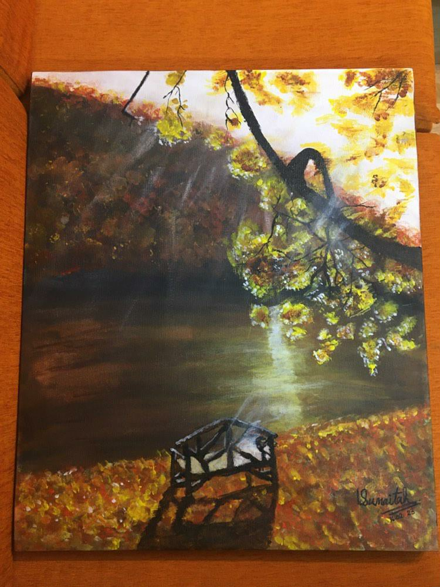
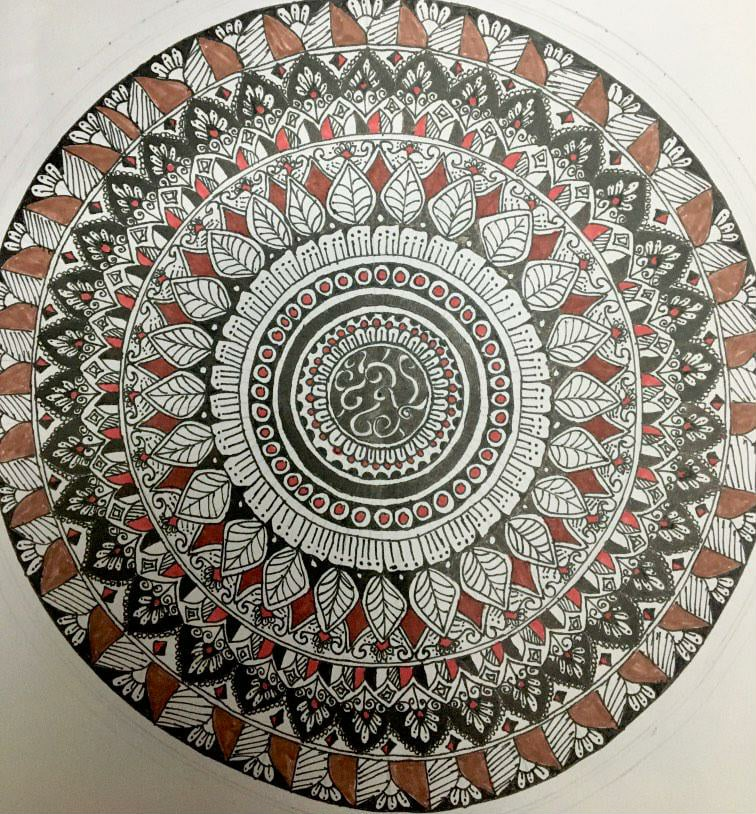
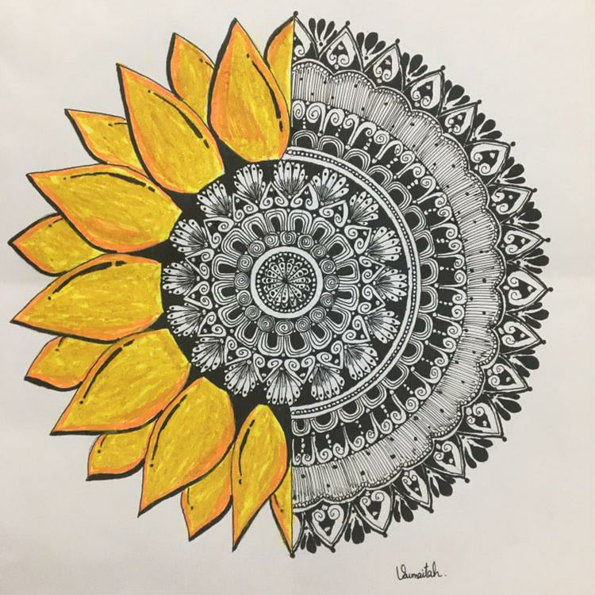
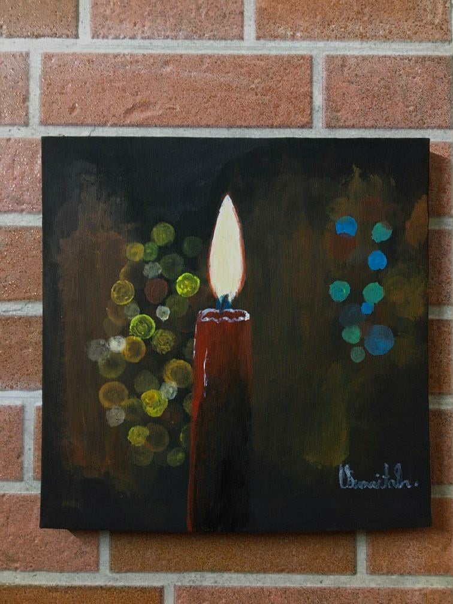
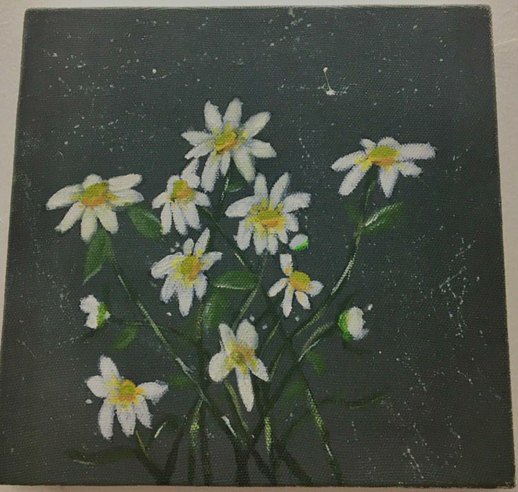
Enjoy creating artwork through canvas painting and mandala art with a focus on detailed pattern design, color harmony, and creative visual expression.
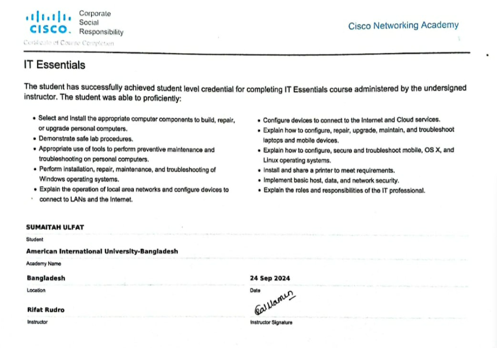
Successfully completed the IT Essentials course from Cisco Networking Academy, gaining knowledge of computer hardware, operating systems, networking basics and troubleshooting.
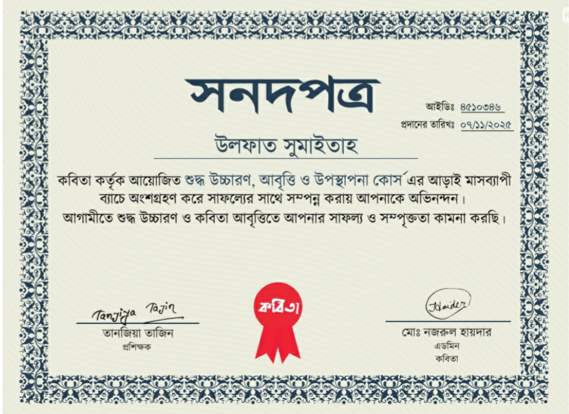
Completed a 6 month course on Recitation, Voice Training and Presentation organized by Kobita.
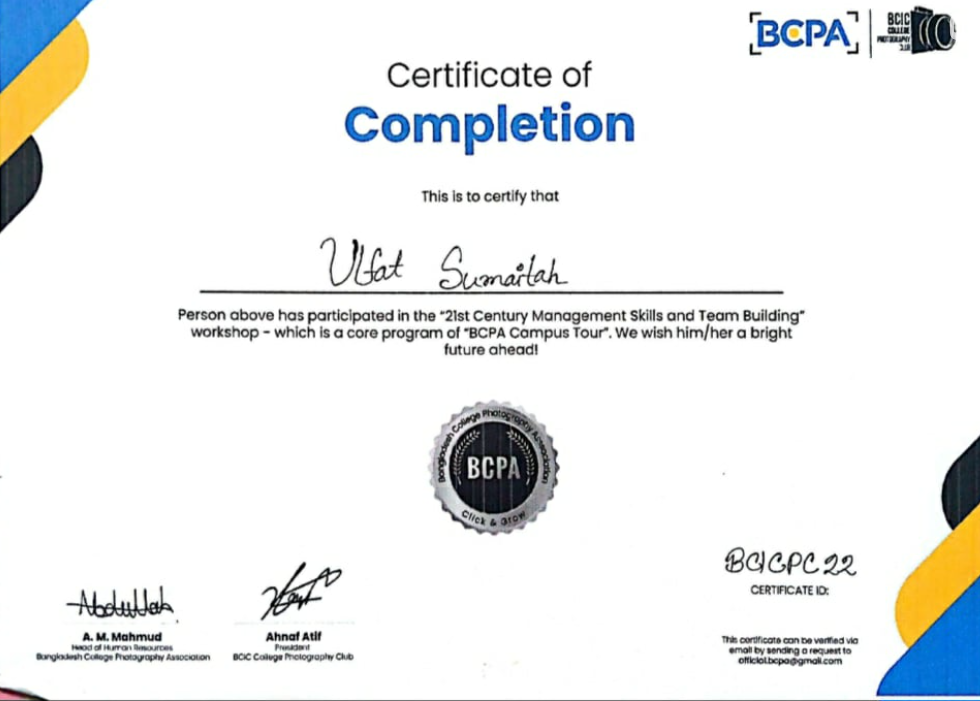
Participant of the 21st Century Management Skills and Team Building workshop organized by Bangladesh College Photography Association.
ulfatsumaitah31@gmail.com | +880 17 3273 1678